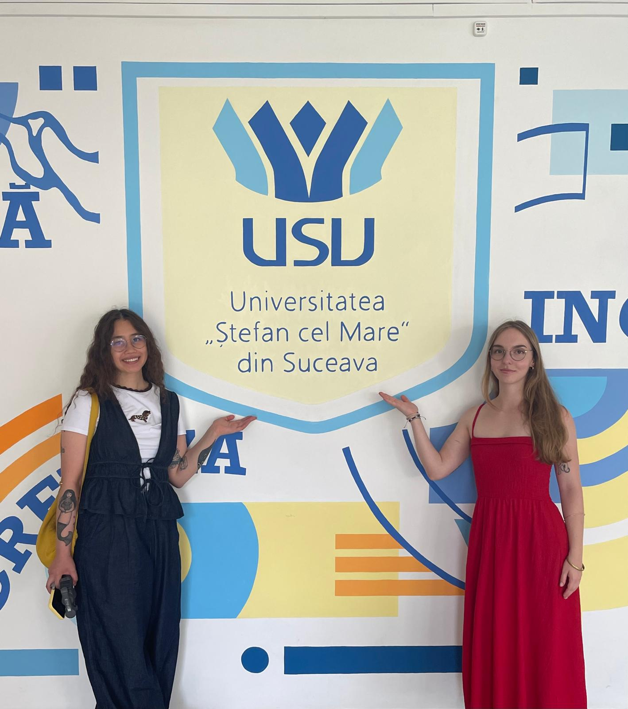
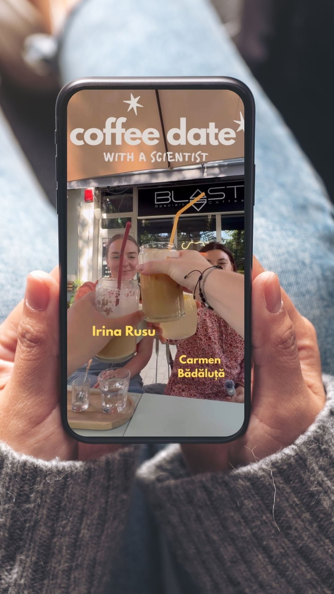
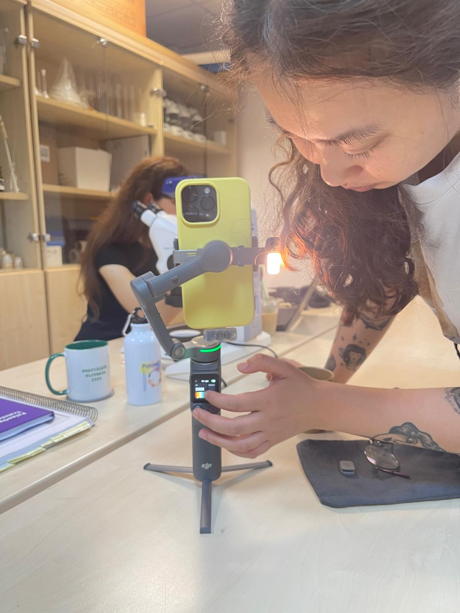
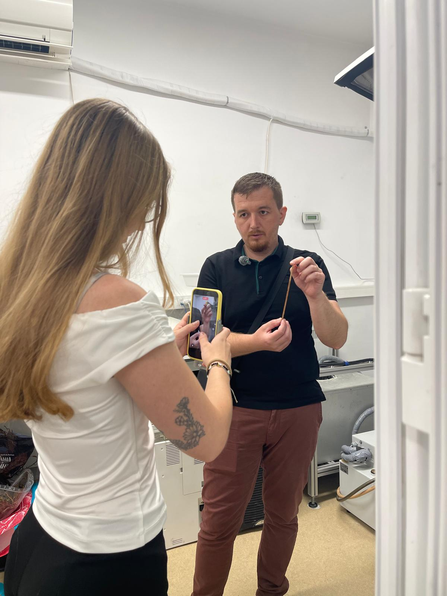

STSM: Romania

In July 2026, we visited Universitatea „Ștefan cel Mare” din Suceava to produce science communication videos about the role of different palaeo-related disciplines in Suceava, Romania. The visit also marked an important first step in launching PalaeOpenExplains, the official Instagram outreach channel for PalaeOpen.
👩🔬 Who?
Ayaka Nguyễn (University of Tübingen, Germany)
Emelie Lüke (Universidad de Murcia, Spain)
🌍 Where?
Universitatea „Ștefan cel Mare” din Suceava, Romania
Hosted by Dr. Gabriela Florescu
📅 When?
1-10 July 2026
Overview
In July 2026, we embarked on a Short-Term Scientific Mission (STSM) with a clear goal in mind: to bring palaeoecology out of the academic bubble and into the spotlight. Our mission was to produce engaging science communication content for PalaeOpenExplains and show the world what our field is all about.
Many people outside academia have never heard of palaeoecology. To change that, we wanted to capture not only the science but also the faces, passion, and diverse disciplines behind it. That is what brought us to the beautiful city of Suceava in northern Romania.
Week 1: History, archaeology, and fresh graduates
Our first week in Suceava was about much more than filming interviews. It was an opportunity to understand how different disciplines come together to reconstruct the past and to see how palaeoecology is beginning to establish itself within the university’s growing research community.
Hosted by the Department of Geography within the Faculty of History and Geography, we quickly learned that palaeoecology occupies an interesting position at the university. While it is offered as a PhD specialisation, it has not yet been incorporated into the bachelor’s or master’s curriculum. As a result, many students encounter palaeoecological ideas only indirectly through neighbouring disciplines such as archaeology, geology, GIS, tourism, and urban planning.
Rather than seeing this as a gap, we saw it as an exciting opportunity. Throughout the week, our interviews became conversations about how understanding the past can strengthen the work being done across many different fields. We asked students whether knowledge of past environments and landscapes was important for their own discipline. Although their perspectives differed, a common theme quickly emerged: understanding where a landscape has come from helps us make better decisions about where it is going.
Whether creating maps, interpreting archaeological sites, managing natural resources, planning sustainable tourism, or understanding geological processes, reconstructing the past provides context that cannot be captured through modern observations alone. It was a reminder that palaeoecology is not an isolated discipline, but one that quietly complements and connects many others by providing a long-term perspective on environmental and human change.
One of the highlights of the week was joining Prof. Sorin Ignătescu at the archaeological excavation in Fetești. Walking through the site brought the region’s history to life, while also highlighting the close relationship between archaeology and palaeoecology. Artefacts tell us about people, but sediments, pollen, charcoal, and other environmental archives help us understand the landscapes those people inhabited.
From the excavation, we travelled to Plopeni-Dealul Căprăriei, where the perspective shifted from individual discoveries to the landscape itself. Standing among the burial mounds on the broad plateau, it was easy to appreciate why this location has attracted people for millennia. The sweeping views across the surrounding countryside served as a reminder that landscapes are far more than a backdrop to human history; they influence where people settle, travel, cultivate the land, and commemorate their dead.
One afternoon, we swapped the laboratory and field for a local café to film the first episode of our “Coffee Date with a Scientist” series. Unsurprisingly, Blast quickly became our unofficial office and favourite coffee stop during our stay in Suceava.
We talked about everything from analysing ice-cave records and working across multiple disciplines to the occasional confusion of introducing yourself as “Dr.” and being mistaken for a medical doctor. Somewhere along the way, the conversation turned to the best fieldwork snacks and how “Don’t Worry, Be Happy” could easily be the unofficial anthem of a PhD.
Moments like these are exactly why we wanted to create Coffee Date with a Scientist. Behind every research project is a person with their own stories, humour, favourite coffee order, and unexpected career journey. By sharing these conversations alongside science, we hope to make researchers feel more approachable, inspire future students, and spark curiosity among the wider public by showing that science is not just about data and discoveries; it is about the people behind them.
We rounded off the week by interviewing MSc geography students immediately after their successful thesis defences. Fresh from presenting months of hard work, they reflected on what first drew them to geography, the challenges they encountered during their studies, and where they hope their careers will take them next.
Listening to students at the very beginning of their research careers was a fitting way to end our first week in Suceava. Throughout the week, we met researchers at every stage of their careers, from established academics to students taking their first steps into research. Together, their stories reinforced an important message: advancing our understanding of the past relies on collaboration, curiosity, and the willingness to learn from one another across disciplines.

Week 2: Into the lab and under the microscope
As we moved into our second week, our focus shifted even closer to the core of PalaeOpen. We dove headfirst into the worlds of dendrochronology and palaeoecology, interviewing a colourful mix of BSc, MSc, and PhD students, as well as established senior scientists.
Our host, Dr. Gabriela Florescu, gave us a wonderful insight into the world of charcoal analysis. She walked us through the steps of preparing sediment samples, showing us how microscopic fragments of burnt wood, plants, and other organic matter can tell stories about past forest fires and vegetation shifts.
The exploration of proxies continued with PhD student Anișoara Filip, who demonstrated how to analyse chironomids, the non-biting “friendly mosquitoes”. In palaeoecology, their preserved larval head capsules are vital proxies for reconstructing past temperatures because different species respond strongly to even minor shifts in water temperature.

We then shifted to the world of dendrochronology. Prof. Cătălin Roibu, the “lord of the tree rings”, and his fantastic team welcomed us into their impressively equipped lab. They carefully showed us each step of preparing wood cores, from sanding them down to measuring the rings under the microscope. We had great conversations about how dendrochronology and palaeoecology complement each other: tree rings give highly precise, year-by-year data on recent climate, while traditional palaeoecology allows us to look back thousands of years, bridging the gap between high-resolution timelines and long-term environmental history.

Acknowledgements
This mission would not have been possible without the incredible support, warmth, and hospitality of the local scientific community in Suceava.
We would like to express our deepest gratitude to Dr. Gabriela Florescu and Anișoara Filip for guiding us throughout this journey, as well as to everyone at the university who volunteered to speak in front of our camera. A special thank you goes to those who went above and beyond by filming additional footage for us when we could not be in two places at once.
Lastly, we extend our heartfelt thanks to PalaeOpen for providing us with the opportunity and funding to embark on this important mission. Thank you for believing in the power of science communication.
This STSM was funded by the COST Action CA23116 — PalaeOpen.